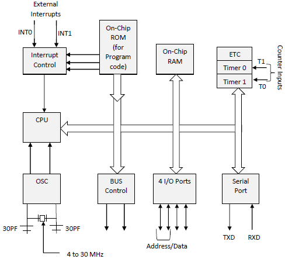

8051 microcontroller is designed by Intel in 1981. It is an 8-bit microcontroller. It is built with 40 pins DIP (dual inline package), 4kb of ROM storage and 128 bytes of RAM storage, 2 16-bit timers. It consists of are four parallel 8-bit ports, which are programmable as well as addressable as per the requirement. An on-chip crystal oscillator is integrated in the microcontroller having crystal frequency of 12 MHz.
In the following diagram, the system bus connects all the support devices to the CPU. The system bus consists of an 8-bit data bus, a 16-bit address bus and bus control signals. All other devices like program memory, ports, data memory, serial interface, interrupt control, timers, and the CPU are all interfaced together through the system bus.
